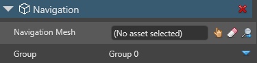

動的ナビゲーション
初級 レベル デザイナー プログラマー
動的ナビゲーションを有効にした場合、ナビゲーション コンポーネントを含むエンティティはナビゲーション メッシュ アセットを必要としません。代わりに、エンティティはナビゲーション メッシュを動的に生成します。
Note
エンティティを動的にナビゲートしたいシーンには、ナビゲーション境界ボックスを必ず設定してください。
動的ナビゲーションを有効にする
動的ナビゲーションは、グローバル ゲーム設定アセットで有効および無効にできます。
動的にナビゲートするエンティティの、ナビゲーション コンポーネントのプロパティの［Navigation Mesh］で、ナビゲーション メッシュが選択されていないことを確認します。

ナビゲーション コンポーネントの詳細については、「ナビゲーション コンポーネント」を参照してください。
［Solution explorer］(既定では左下のペイン) で、［Assets］フォルダーを選択します。

［Asset view］(既定では下部のペイン) で、［Game Settings］アセットを選択します。

［Property grid］(既定では右側のペイン) で、［Navigation Settings］の［Dynamic navigation mesh］を展開します。

［Enabled］チェックボックスをオンにします。

動的ナビゲーション メッシュのプロパティ
| プロパティ | 説明 |
|---|---|
| Enabled | ナビゲーション メッシュが割り当てられていないナビゲーション コンポーネントで動的ナビゲーションを有効にします。 |
| Included collision groups | 動的に生成されるナビゲーション メッシュが使用する衝突グループです。既定では、メッシュはすべての衝突グループを使用します。 |
| Build settings | 動的に生成されるナビゲーション メッシュの高度な設定です。 |
動的ナビゲーションをスクリプトから有効および無効にする
コード例:
// 動的ナビゲーション メッシュ システムを検索して有効にする
dynamicNavigationMeshSystem = Game.GameSystems.OfType<DynamicNavigationMeshSystem>().FirstOrDefault();
dynamicNavigationMeshSystem.Enabled = true;
// 以下の場合に、動的ナビゲーション メッシュ システムが自動的に再ビルドされなくなる。
// - シーンのロード/アンロード
// - 静的コライダー コンポーネントの追加/削除
// - ナビゲーション メッシュ境界ボックスの追加/削除
dynamicNavigationMeshSystem.AutomaticRebuild = false;
// ...
if (/* ナビゲーション メッシュの更新が必要になるすべての条件 (ドアを開く/閉じる、など) */)
{
// ナビゲーション メッシュの非同期再ビルドを開始する
var rebuildTask = dynamicNavigationMeshSystem.Rebuild();
rebuildTask.ContinueWith((x) =>
{
if (x.Result.Success)
{
// ナビゲーション メッシュが正常に再ビルドされた
}
});
}